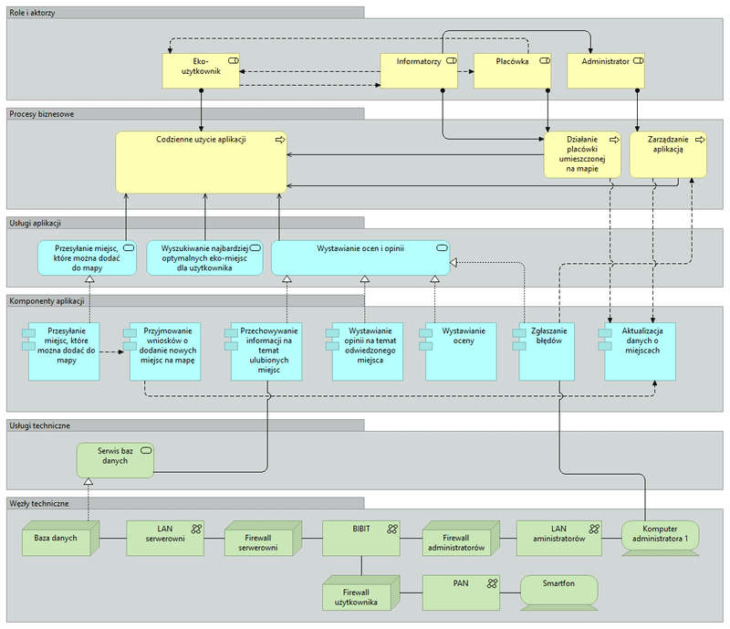

MAPeco - Prototype
We decided to focus on the solution containing a map of environment-friendly places and events. Before launching Figma, we created a graphical representation to specify our business processes:
From the top of the diagram you can see that our app forsaw two types of users - a standard user account and an administrator account. They are connected to two business processes - everyday usage of the application and application administration, respectively. Above the middle of the diagram you can see that our app has three main services: uploading new places and events, browsing existing places and events and rating them. These actions are possible thanks to the components, i.e. receiving forms about new places or events, keeping the database up-to-date and reporting old events or no more existing places. Finally, the bottom of the diagram shows how we expected the backend to look like. There has to be a database and an administartor console, so the data can be streamed to the end-users' smartphones.
As for the prototype, I was responsible for the welcome and login screens as well as an account page and a new place upload form.
Oh, I would have forgotten, from now on we can talk about MAPeco. :)